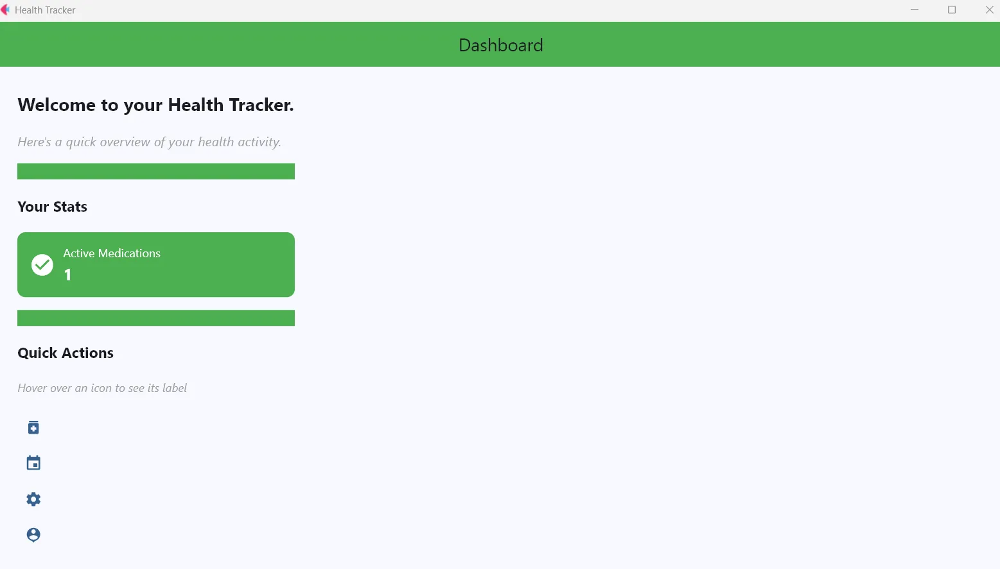
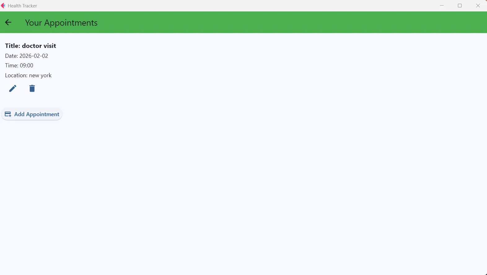
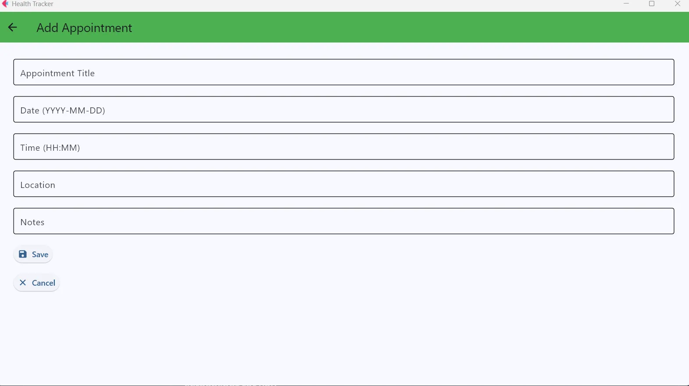
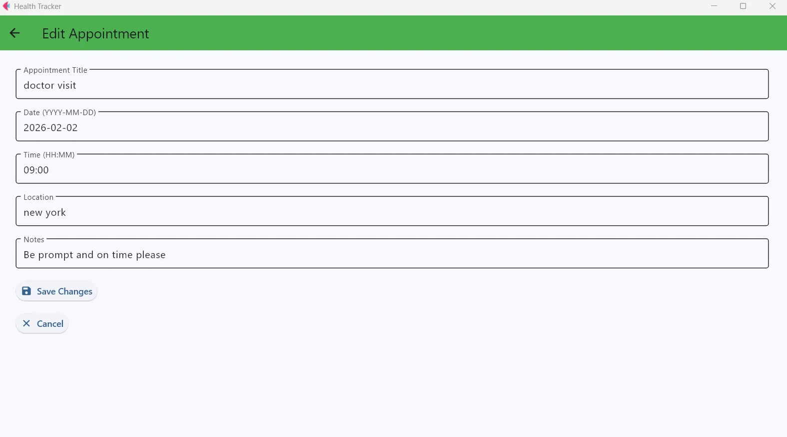
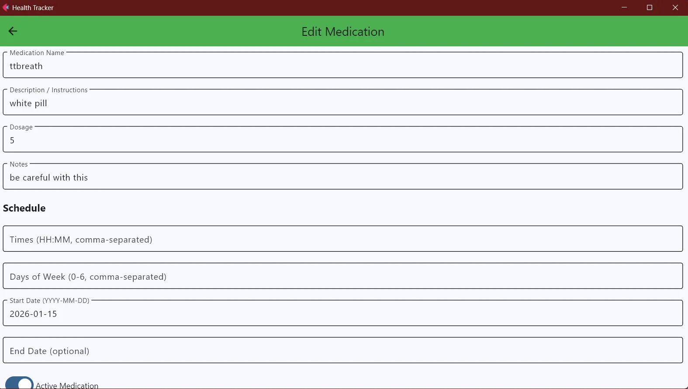
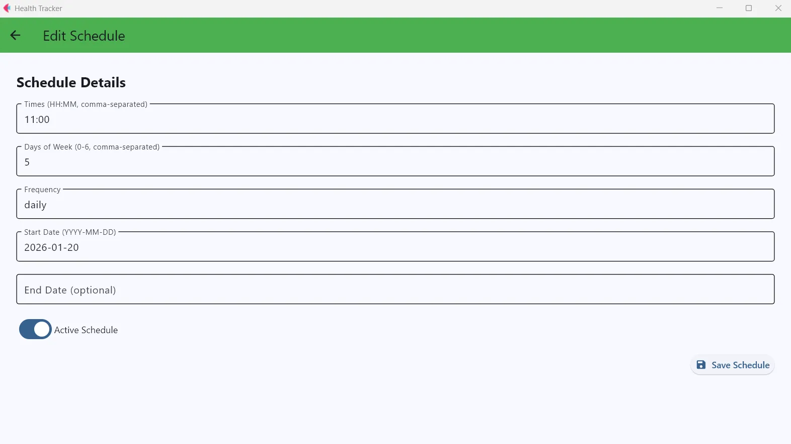
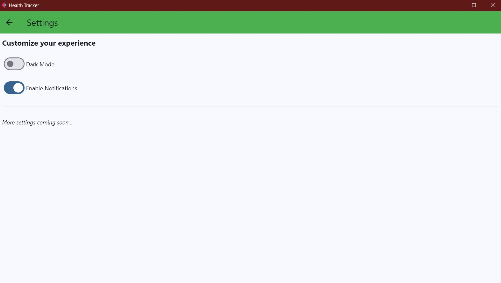
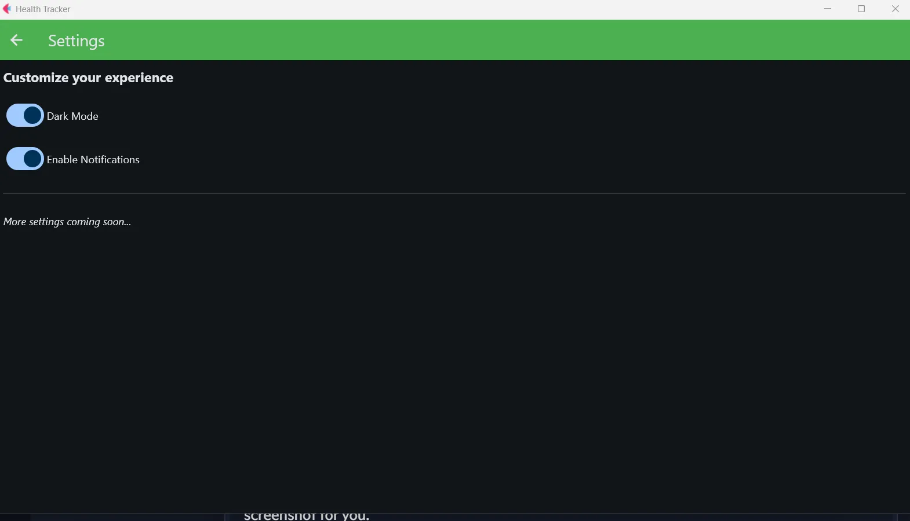
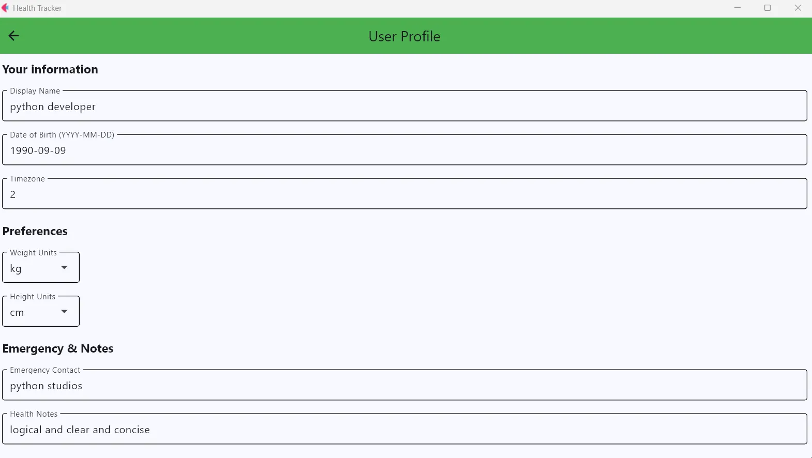
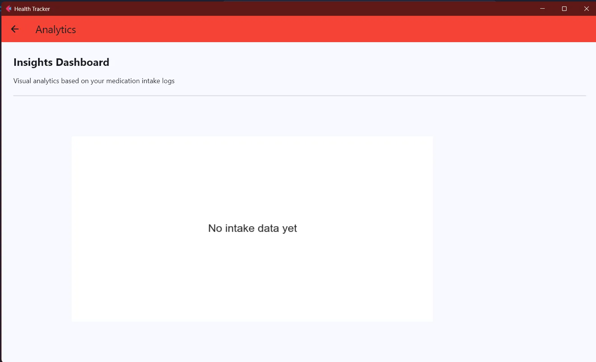

Health Tracker App
A modern, modular health‑tracking application built with Python and Flet.
It’s designed to manage medications, reminders, schedules, appointments, and user health data.
The architecture follows a clean separation of concerns with repositories, validators, services, and a background scheduler.
⭐ Features
💊 Medication Management
- Add, edit, and view medications
- Dosage tracking
- Notes and status indicators
⏰ Scheduling and Reminders
- Daily and weekly schedules
- Custom reminder offsets
- Automated reminder event generation
- Background scheduler thread
- UI notifications via Flet’s SnackBars
📅 Appointments
- Create and manage appointments
- Notes, location, date, and time
📈 Intake Logs
- Track when medication was taken
- Validation to ensure data integrity
👤 User Profile
- Basic user information
- Editable profile screen
⚙️ Settings
- Toggle notifications
- App preferences
📸 Screenshots
Dashboard

Appointments

Add Appointment

Edit Appointment

Medications

Schedules

Settings

Dark Mode

User Profile

Analytics Dashboard

🧱 Architecture Overview
The project is structured into clear, maintainable layers.
🎨 UI Layer (Flet Views)
- Screens for medications, appointments, schedules, dashboard, settings, and more
📦 TypedPage
- A custom subclass of
ft.Pagethat acts as a dependency container
🗄 Repositories
- Handle all database interactions
🛡 Validators
- Ensure data integrity before saving
🔧 Services
- Business logic for schedules, reminders, notifications, and intake logs
🧮 ScheduleEngine
- Expands schedules into actual datetime events
🕒 SchedulerService
- Background thread that checks for due reminders every minute
📂 Project Structure
health_app/
│
├── data/
├── models/
├── screens/
├── services/
├── validators/
├── ui_types/
├── main.py
└── README.md
🚀 Installation
1. Clone the repository
git clone https://github.com/reory/Health-Tracker-App.git
python -m venv venv
# windows
venv\Scripts\activate
# mac/linux
source venv/bin/activate
Run the App
pip install -r requirements.txt
python main.py
🗺 Roadmap
Planned enhancements and future improvements:
- [ ] Add medication refill reminders
- [ ] Add data export/import (JSON or CSV)
- [ ] Add Analytics Integration (In Development): Utilizing Matplotlib and Numpy for health trend visualization
- [ ] Add charts for intake history
- [ ] Add cloud sync or optional online backup
- [ ] Add multi‑user profiles - Using FAKER.
- [ ] Add theme customisation (colour palettes)
- [ ] Add optional biometric lock (Windows Hello / Touch ID)
🧪 Test File
A stripped‑down test file (test.py) is included for isolating UI behaviour.
Run the the Test Suite
pytest
🤝 Contributions
Contributions are welcome as always.
👤 Author — Roy Peters
Enjoy architecting clean, maintainable Python applications with clarity and purpose for everyone. Click here for contact details 😁